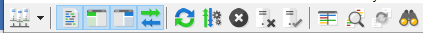
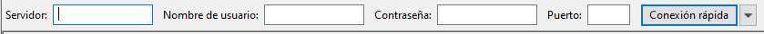
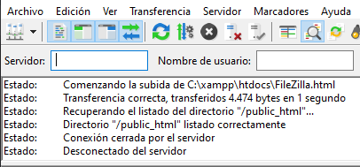
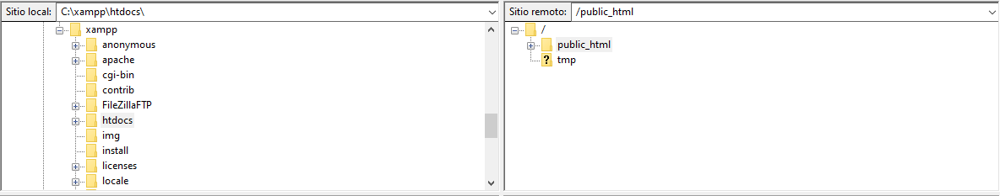
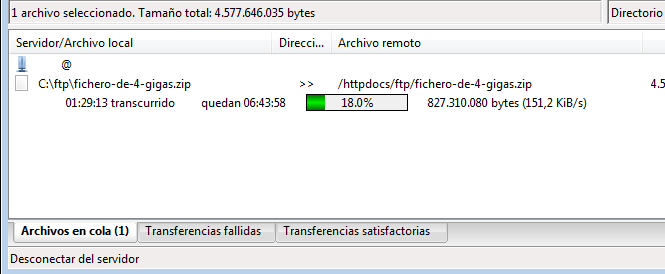
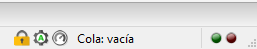

Para instalar filezilla en window, mac o linux, primero deberemos
descargarlo en su página web pinchando aquí .
Una vez descargado eligiendo previamente el sistema operativo,
deberemos de seguir un par de pasos:
ejecutar el archivo .exe descargado haciendo doble click en este,
seguidamente debemos aceptar las condiciones de uso haciendo click
en "I Agree".
Cuando aceptemos los términos de uso seguiremos pulsando en
siguiente y seleccionando la configuración deseada según nos
convenga. Finalmente pedirá que reiniciemos nuestro equipo y ya
tendríamos instalado FileZilla.
Como configurar FileZila
Una vez se reinicie el sistema podremos lanzar FileZilla haciendo
doble click ya sea a través de un icono en el escritorio (si lo
hemos creados previamente a través de las opciones de instalación) o
ya sea buscándolo en el buscador de window a la derecha de inicio.
Lo primero que veremos cuando lancemos FileZila sera un saludo de
bienvenida que podremos quitar dándole en aceptar y ya podríamos ver
la interface de FileZila
Para empezar se creara una conexion con FileZilla y el host o los
host en el caso de querer gestionar. Para ello debemos meternos en
"Archivo" y luego pulsar en "Gestor de sitios..."
Se abrirá una ventana donde podremos crear nuevos sitios en la
agenda de FileZilla, pulsando en el botón "Nuevo sitio" se generara
un cupo para este nuevo host donde agregaremos primeramente el
nombre que le queramos dar y en los campos de la derecha los datos
necesarios para que se establezca la comunicación con el servidor
como el nombre del servidor, el modo de acceso.
Una vez iniciemos la conexion con el host es probable que nos
aparezca un mensaje de advertencia que diga Certificado desconocido,
lo cual obviaremos en el caso de que el servidor sea nuestro.
Botones rápidos:
Aunque con los menús Archivo, Edición, Ver, etc, se puede
acceder a todas las funciones. FileZila nos ofrece la
posibilidad de acceder a todas la opciones desde accesos
rápidos
 Fig.1
- Botones rápidos
Por defecto vendrá pulsado 4 secciones básicas para
visualizarse debajo. Estas son área de mensajes, árbol de
directorios local, árbol de directorios remoto y la cola de
transferencia
Conexión rápida
Justo debajo de la sección de botones rápidos se puede ver la
sección de conexión rápida.

Fig.2 - Conexión rápida
Desde aquí podemos conectarnos a un servidor de forma inmediata.
Lo cual puede ser útil para conexiones puntuales.
Registro de estados y eventos
En esta sección se muestran todos los mensajes, estados y
eventos que se produzcan entre el host y FileZilla.

Fig.3 - Registro de estados y eventos
Los errores se visualizan en rojo y las respuestas del servidor
en verde para dar mas claridad a la hora de consultar esta lista.
Explorador de archivos (local y remoto)
En esta sección podemos ver a la izquierda todas las carpetas de
nuestro sistema y a la derecha las carpetas del host. Lo que
nos permitirá navegar tanto por las carpetas de nuestro sistema
como por las del host y seleccionar las carpeta que queramos

Fig.4 - Explorador de archivos (local y remoto)
desde aquí podemos arrastrar de la sección izquierda a la
derecha las carpetas que queramos sincronizar con el host, también
podemos pulsar el botón secundario del ratón sobre el archivo y
darle a subir.
Justo debajo podemos ver otras dos secciones donde se muestra lo
contenido en la carpeta que tengamos seleccionada. Del mismo modo
podemos sincronizar archivos ya sea arrastrando o desde el botón
secundario del ratón.
Cola de transferencias
En esta sección podemos controlar las transferencias y
administrar la cola de transferencias de los documentos.

Fig.5 - Cola de transferencias
Configuración y estado de la cola de transferencias
Por ultimo en la parte inferior derecha de la interface de
FileZilla podemos ver información relacionada de la conexion
con el servidor, como por ejemplo si esta cifrada,
también podemos desde aquí limitar la velocidad de esta. Ademas
podemos comprobar el estado de la cola y su tasa de transferencia.
 Fig.6
- Configuración y estado de la cola de transferencias